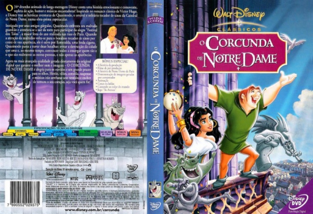
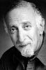
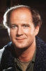

Outro Título:The Hunchback of Notre Dame
País:United States, 91 minutos
Idiomas falados:Espanhol, Inglês, Português
Gênero(s):Drama, Animação, Família
Diretor(s):Gary Trousdale, Kirk Wise
Escritor(es):Victor Hugo, Jonathan Roberts, Noni White, Irene Mecchi, Tab Murphy
Codec:MPEG-2 (DVD)
Número: 5841


Certificado:L
Sinopse:
Quasimodo, um corcunda, vive uma vida isolada. Ele toca os sinos da Catedral de Notre Dame e seu mestre, Claude Frollo, o Ministro da Justiça, não o deixa sair. Um dia, ele escapa para um festival na cidade, onde conhece a encantadora Esmeralda, uma cigana. Quando ele é atormentado e ridicularizado pelos soldados, a mando de Frollo, ela o resgata. No entanto, Esmeralda se vê em perigo pelos planos de Frollo e pede ajuda a Quasímodo. Será que Quasímodo conseguirá ajudar Esmeralda e salvar Páris e Notre Dame da ira de Frollo?
Elenco:  


Tipo de mídia: DVD5,
Legendas: Espanhol, Inglês, Português, Sem Legendas
Alugado: Não
Tela: Anamorphic Widescreen